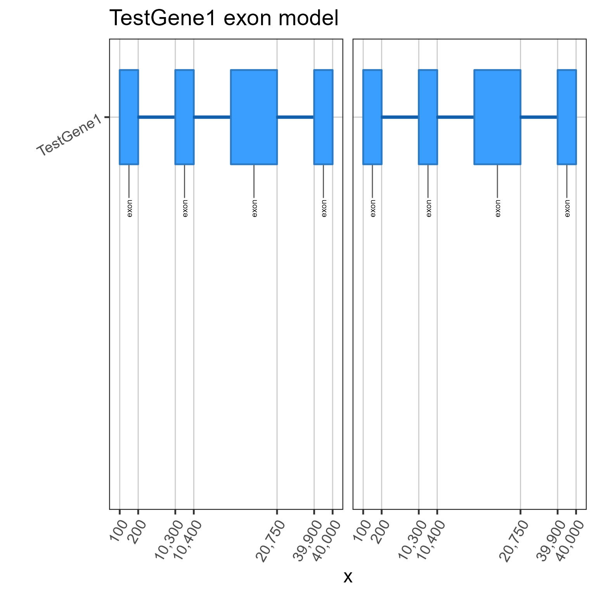
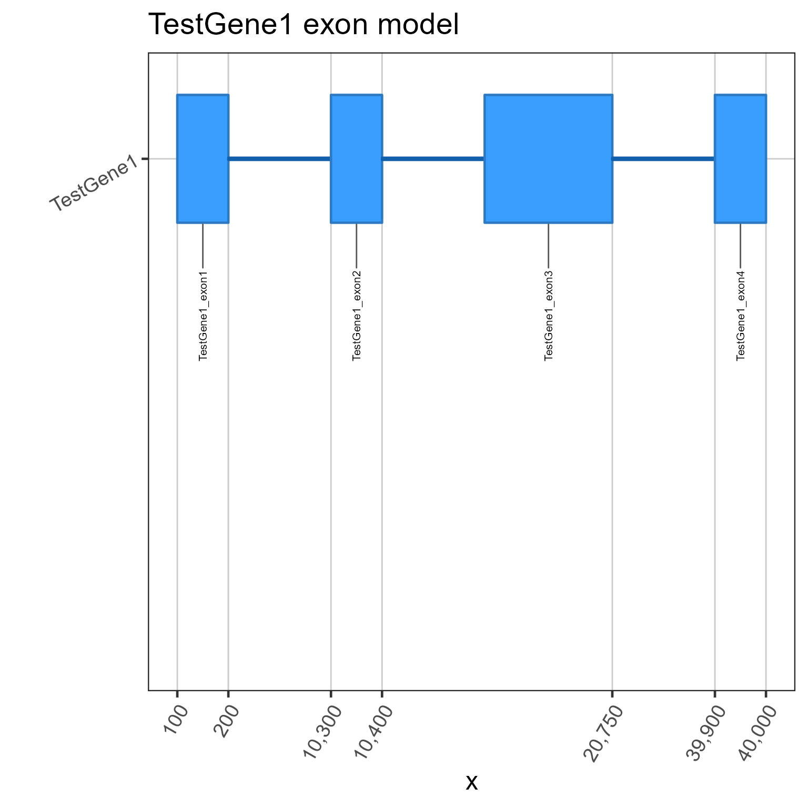
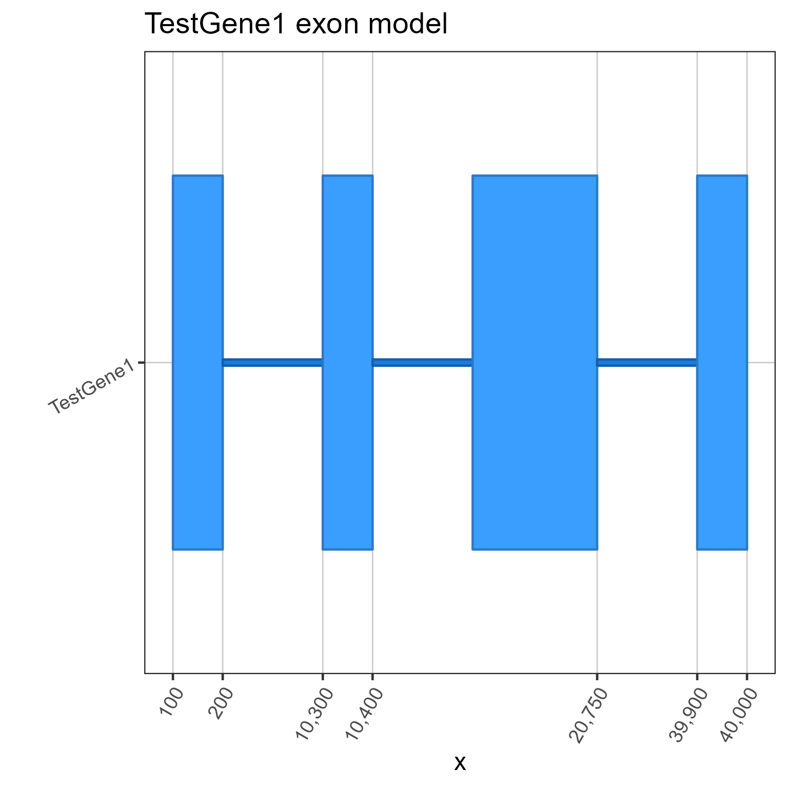

Gene GRangesList to ggplot2 grob
Usage
gene2gg(
gene = NULL,
tx = NULL,
sjenv = NULL,
flatExonsByGene = NULL,
flatExonsByTx = NULL,
geneColor = "dodgerblue",
labelExons = TRUE,
exonLabelAngle = 90,
exonLabelSize = 8,
geneAxisAngle = 30,
geneSymbolColname = "gene_name",
newValues = list(feature_type = "gap", subclass = "gap", gene_nameExon = "gap"),
gene_order = c("first", "last"),
return_type = c("grob", "df"),
ref2c = NULL,
hjust = 0.5,
vjust = 0.5,
direction = c("both", "x", "y"),
compressGaps = TRUE,
tx2geneDF = NULL,
label_coords = NULL,
layout_ncol = 1,
verbose = FALSE,
...
)Arguments
- gene
characterstring of the gene to plot, compared withnames(flatExonsByGene)andvalues(flatExonsByTx)$gene_name.- tx
charactervector of the transcripts to plot, useful when specifying specific transcripts. Values are matched withnames(flatExonsByTx).- sjenv
environmentdefault NULL, used as convenient way to pass arguments such as 'flatExonsByGene' and 'flatExonsByTx'. It will use function arguments when provided, and recognizes the following variables:'flatExonsByGene'
'flatExonsByTx'
'filesDF'
'ref2c' (optional)
- flatExonsByGene, flatExonsByTx
GRangesListobjects, named by"gene_name"or"transcript_id"respectively, containing disjoint (non-overlapping) exons within each GRangesList element. The data is expected to be in the form provided byflattenExonsBy().- geneColor
charactercolor used as the base color for exons, where the color is varied for each feature type or subclass.- labelExons
logicalindicating whether to print text labels beneath each exon, using the values in colname"gene_nameExon". Typically the gene and transcripts are named using consistent names, in which case one exon label is placed at the bottom of the lowest transcript for each unique exon label.- exonLabelAngle
numericangle in degrees (0 to 360) indicating how to rotate exon labels, where90is vertical, and0is horizontal.- exonLabelSize
numericvalue orunitobject fromgrid::unit(). Numeric values are assumed to have unit"pt"which refers to font point size. Used to size exon labels whenlabelExons=TRUE.- geneAxisAngle
numericdefault 30, angle in degrees (0 to 360) where 0 is horizontal. This angle is applied to the gene and transcript labels on the y-axis.- newValues
argument passed to
addGRLgaps()to fill column values for newly created gap entries. It is useful to havefeature_type="gap"so gaps have a different value than exons. It is also useful to havesubclass="gap"when there are"cds"and"noncds"entries in the providedflatExonsByGenedata.- gene_order
charactervalue indicating whether the flattened gene model should be plotted"first"above the transcript exon models, or"last"and below the transcript exon models.- return_type
charactervalue indicating whether to return the ggplot graphic object"grob", or the data.frame"df"used to create the ggplot object.- ref2c
listoutput frommake_ref2compressed()which contains among other things, thetrans_grcdata of classtransortransformdepending upon the versions ofscalesandggplot2packages. It is used byggplot2::coord_transform()orggplot2::scale_x_continuous(). Note: The use oftransortransformobject types should be consistent with the version ofscalesandggplot2, for example an older version from cached data cannot be used with newer version ofggplot2. In that case the remedy is to delete the cache and start anew. Specifically, deletesashimi_memoise.- hjust, vjust
numericvalue to position exon labels passed toggrepel::geom_text_repel().- direction
characterstring passed toggrepel::geom_text_repel()to restrict placement of labels to one axis direction.- compressGaps
logicalindicating whether to compress gaps between exons. Whenref2cis supplied, this argument is ignored and the suppliedref2cis used directly.- tx2geneDF
data.frameor NULL, optionally used to help identify matching transcripts for the requestedgenevalue, used when"gene_name"is not present invalues(flatExonsByTx).- label_coords
numericvector length 2, optional range of genomic coordinates to restrict labels, so labels are not arranged byggrepel::geom_text_repel()even whencoord_cartesian()is used to zoom into a specific x-axis range.- layout_ncol
numericdefault 1, the number of columns output, intended to help align gene model with multi-column sashimi plot output usingggplot2::facet_wrap().- verbose
logicalindicating whether to print verbose output.- ...
additional arguments are passed to relevant functions as needed, including
make_ref2compressed().
Details
This function is intended to help plot gene and transcript exon
models, and is a lightweight wrapper around grl2df().
It takes flatExonsByGene which is the output from
flattenExonsBy(), and essentially plots the end result
for review.
Alternatively, when return_type="df", the output is
the data.frame used to produce the ggplot, which allows
for more customization.
See also
Other Sashimi prep functions:
exoncov2polygon(),
grl2df(),
make_ref2compressed(),
plotSashimi(),
prepareSashimi()
Examples
## Assume we start with flattened gene exons
data(test_exon_wide_gr);
test_flatExonsByGene <- GenomicRanges::split(test_exon_wide_gr,
GenomicRanges::values(test_exon_wide_gr)[,"gene_name"]);
# The most basic plot of exons
gene2gg(gene="TestGene1", flatExonsByGene=test_flatExonsByGene);
# The most basic plot of exons, layout_ncol=2
gene2gg(gene="TestGene1", layout_ncol=2, flatExonsByGene=test_flatExonsByGene);

# You can be fancy and number the exons
test_flatExonsByGene <- assignGRLexonNames(test_flatExonsByGene,
geneSymbolColname="gene_name");
gene2gg(gene="TestGene1", flatExonsByGene=test_flatExonsByGene);

# Or the exon labels can be hidden
gene2gg(gene="TestGene1", flatExonsByGene=test_flatExonsByGene, labelExons=FALSE)

if (1 == 2) {
## Do not run automated examples until sample data is available
ggGria1 <- gene2gg("Gria1",
flatExonsByGene=flatExonsByGeneCds);
## if transcript exons are available
ggGria1 <- gene2gg("Gria1",
flatExonsByGene=flatExonsByGene,
flatExonsByTx=flatExonsByTx);
}